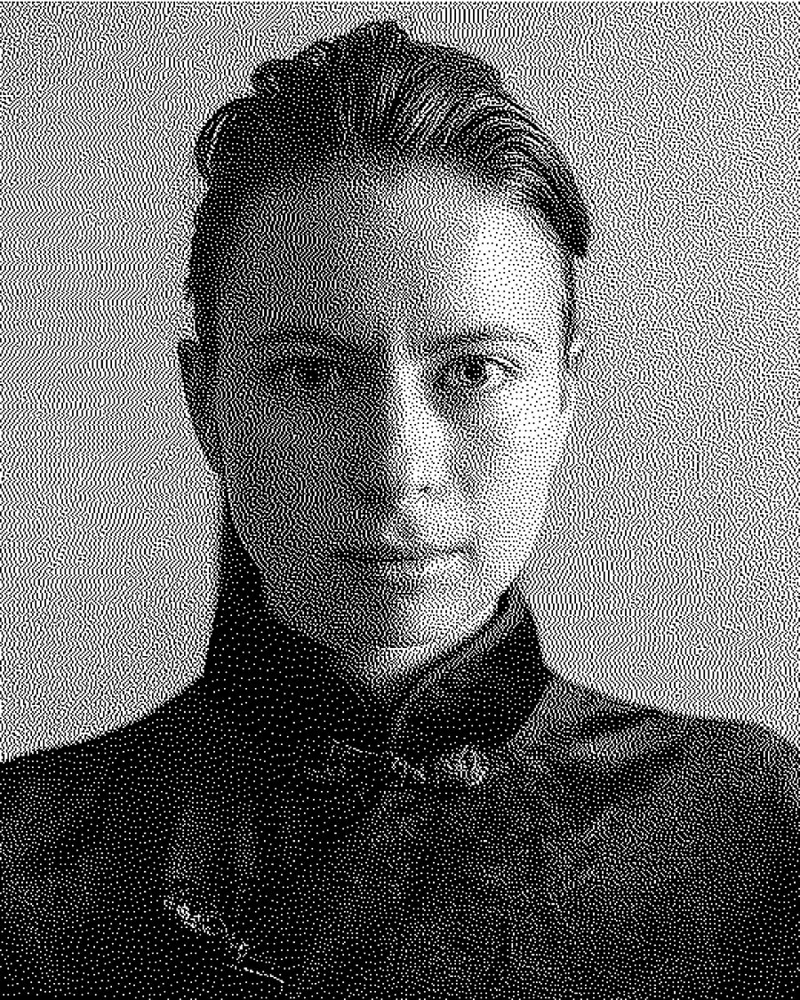

Анна СінельнікAnna Sinelnik
Полтава, УкраїнаPoltava, Ukraine
Мультидисциплінарна художниця та перформерка, працює з цифровими технологіями (AR, ШІ, 3D, digital art).
Використовує інтуїтивне мистецтво для дослідження соціальних тем через власні відчуття.
Теми: війна в Україні, втрата близьких через війну, корупція, бідність, екологічні кризи, втрата культурної спадщини, міграція, дискримінація, самотність.
Живе та працює в Полтаві.
Multidisciplinary artist and performer, works with digital technologies (AR, AI, 3D, digital art).
Uses intuitive art to explore social topics through her own sensations.
Themes: war in Ukraine, loss of ones due to war, corruption, poverty, ecological crises, loss of cultural heritage, migration, discrimination, loneliness.
Lives and works in Poltava.